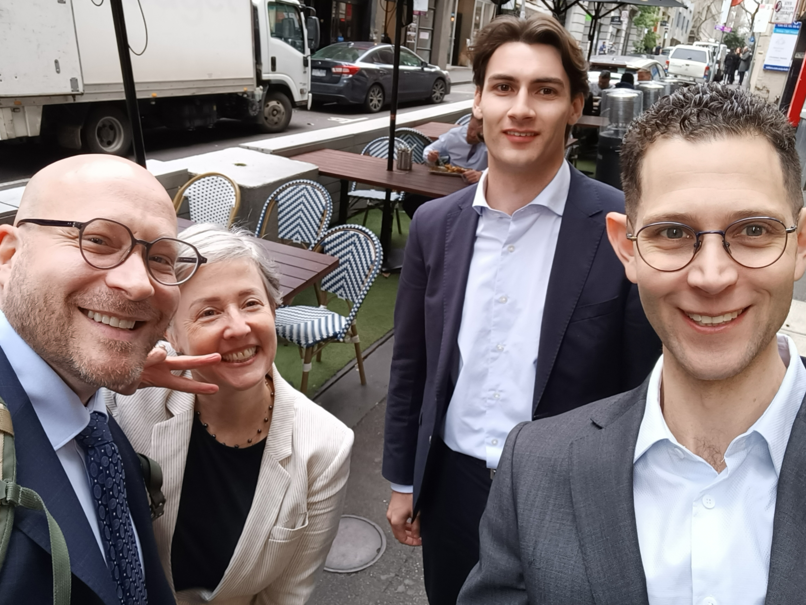

The hearing is over! (Mostly)
Phew! After 3 massive days, the hearing (apart from closing submissions) is over. I am writing this post at the airport ahead of my flight home to Brisbane, while everything is still fresh.
The quick summary is: we think it went really well! This post is a recap of the three days and a preview of upcoming events. I was posting updates to my socials (@hackuador@functional.cafe) during the last few days, so I’ll reproduce those posts here, along with some additional reflections.
Day 1 §
Day one of my #myGov source code #FOI hearing is over. Today consisted of opening statements, then examination in chief and open cross-examination of Mr Garrett McDonald, CISO and General Manager Cyber Security at Services Autralia. I am pleased with how things went today. Due respect to Mr McDonald, who endured a gruelling and protracted cross-examination.
The Tribunal for my matter is constituted by Deputy President Dordevic (presiding), Deputy President Roushan and Deputy President O’Donovan. They are on the ball; very impressive how quickly they are getting across a highly technical case and discerning the critical questions of fact.
Tomorrow starts with a closed session to receive further evidence from Mr McDonald. I am excluded; the Tribunal will ask questions on my behalf. Open session from 2pm in which my expert witnesses will give evidence - first Dr Peter Serwylo then Prof Vanessa Teague.
Thanks to my legal eagles Jason, EJ and Tom, and all my supporters. Follow along at https://openmygov.au/.
Day 2 §
Day two in the #myGov Code Generator source code #FOI review. Most of the day was a closed session cross-examining Mr McDonald (I and my representatives were excluded). The Tribunal assumes the role of the applicant in closed sessions. We were able to submit questions for the Tribunal to ask on our behalf, which they did.
The fact that the closed session ran so long reflects the technical nature of the matter and large volume of evidence. Perhaps it also suggests that the Respondent does not have an “ace in the hole” that makes the outcome a foregone conclusion.
Late afternoon we returned to open session. Dr Peter Serwylo gave evidence and was cross-examined in relation to the “counterfeiting” risk (which, per his evidence and common sense, exists regardless of the availability of source code).
We resume at 10am tomorrow with Professor Vanessa Teague to be examined first, then me. Closing submission are to be in writing and filed after the hearing (exact timeline TBD).
Updates, case info, and how to support at https://openmygov.au/
Interlude: sudden insight §
I woke up at 06:00 this morning (start of Day 3) with sudden and unexpected insights about probable lines of evidence and argument put by Services Australia in the confidential affifdavit and closed sessions. It is as though things that Mr McDonald said during his open cross-examination planted seeds that, after a day and a half, germinated and sprouted into my mind as fully formed (albeit dubious) concepts. How fortunate that the time to germinate was short enough that the sprouting happened before the hearing concluded!
I am hesitant to share the details of the lines of reasoning I now think Services Australia is likely to be pursuing in their confidential evidence and submissions. Because in the event I am wrong, it might give them new ideas! Suffice to say, we hastily figured out some additional questions to ask Vanessa Teague and myself in order to cover off these lines.
Day 3 §
Day 3 done - for us. The hearing in my #myGov Code Generator app #FOI case will wrap with a closed session, following examination of Prof Vanessa Teague and of me. Closing submissions to be in writing in a few weeks. It went as well as we could have hoped - maybe better! Thanks to all my supporters, and my legal team Jason, EJ and Tom.
Something funny that happened on Day 3: During cross-examination of Vanessa, counsel for Services Australia requested to tender into evidence the full text of RFC 6238 (TOTP) and RFC 4226 (HOTP). Goodness only knows why. The Deputy Presidents took one glance at them and, noting that receiving the documents into evidence meant they would be required to read them in entirety, refused to accept them. A wise move!
What’s next? §
The Tribunal has agreed to receive closing submissions in writing. We await the hearing transcript; closing submissions will be due e.g. two weeks after that becomes available. So, another month, give or take. Jason then expects it will be a month or two before the Tribunal hands down its decision. Maybe an early Christmas present?
As soon as I get the OK from Jason, I will publish additional case material: affidavits, expert reports, SOFICs, etc.
Some time in the next two weeks I will do another supporter Q&A. I’ll announce it here and on Pozible and Chuffed, so stay tuned.
Thanks and acknowledgements §
As always, mega thanks to my financial supporters and to the freedom lovers who continue to spread the word and demonstrate their support to me. I noticed some familiar names pop up in the videoconf system during the hearing—cheers for stopping by!
Vanessa and Peter, thank you for outstanding work assisting the Tribunal as expert witnesses.
Jason and EJ (Wise Law), thanks for your hard work and diligence representing and assisting me throughout the whole process and especially this week. EJ, it was a pleasure to finally meet you in person. Tom, nice to meet you and I trust you enjoyed this experience of administrative law in action—or at least gleaned something useful from it!
